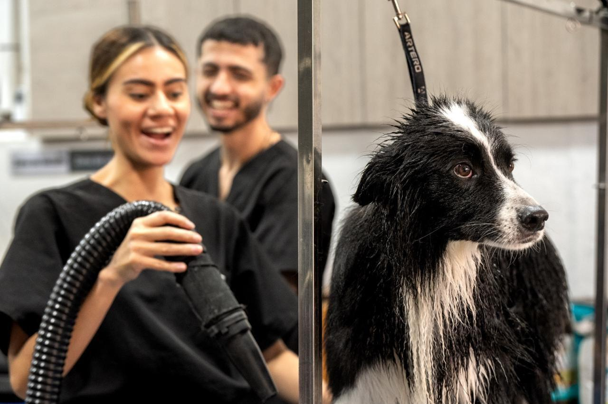
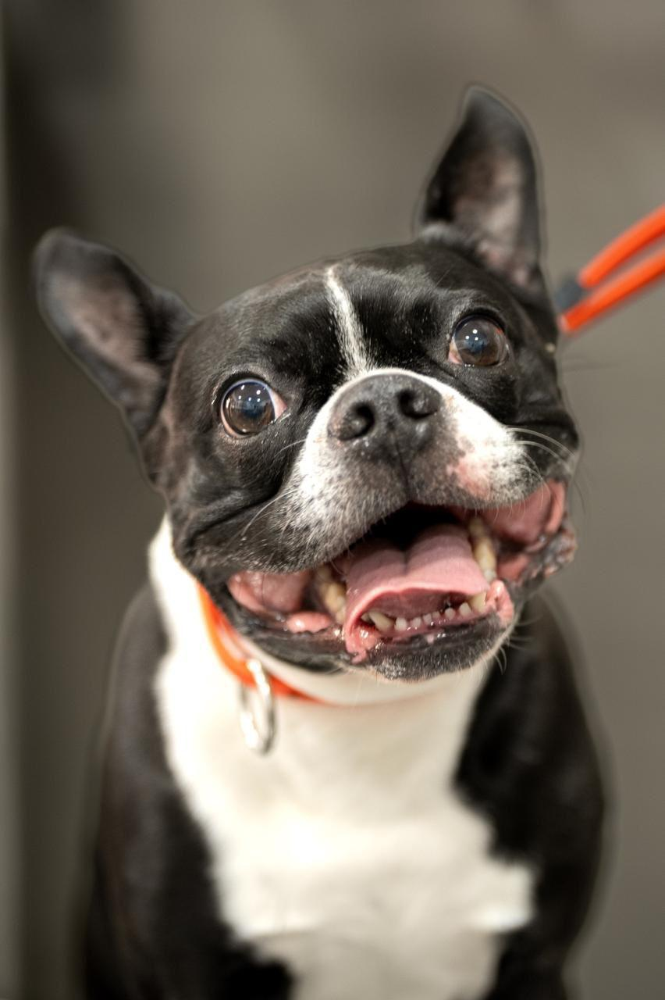
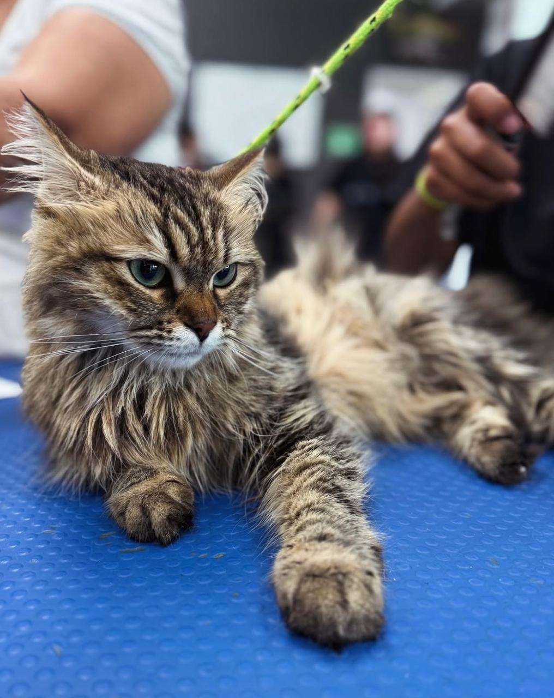

EDEA PRO
Peluquería Canina y Felina Premium
Cuidado Experto
Profesionales certificados en el cuidado de tu mascota
Instalaciones Modernas
Ambiente limpio, seguro y cómodo para tu compañero
Cuida a tu Mascota con Profesionales
En EDEA PRO, ofrecemos servicios de grooming de alta calidad para perros y gatos. Nuestro equipo de expertos utiliza técnicas avanzadas y productos premium para garantizar que tu mascota se sienta cómoda, segura y hermosa.
Contamos con instalaciones modernas, personal certificado y un profundo amor por los animales. Cada servicio es personalizado según las necesidades específicas de tu compañero peludo.
Reserva Aquí
Nuestros Servicios de Grooming
Descubre la variedad de servicios que ofrecemos para tu mascota

Peluqueria Canina
Brindamos un cuidado completo para tu perro, adaptando cada baño y corte según su raza, tamaño y necesidades. Usamos productos especializados y técnicas profesionales para que tu compañero siempre luzca y se sienta increíble.

Peluqueria Felina
¡Hacer que tu gato se sienta cómodo es nuestra prioridad! Nuestros baños están pensados para su tranquilidad, con atención personalizada y productos especiales para mimar a tu felino.
ARTE, PASIÓN Y PROFESIÓN
En EDEA, combinamos el arte, la pasión y la profesión para transformar vidas, tanto de personas como de animales de compañía. Somos más que una escuela; somos un espacio donde la creatividad y la conexión animal convergen para despertar el potencial humano y profesional. Aquí, estudiantes y estilistas no solo perfeccionan su oficio, sino que descubren su propósito, se conectan con sus capacidades y comprenden un camino hacia la excelencia, a través de nuestra dedicación al estilismo canino y felino.
Profesionales Certificados
Nuestro equipo cuenta con años de experiencia y certificaciones internacionales en grooming y cuidado animal. Cada miembro está comprometido con la excelencia y el bienestar de tu mascota.
Conocer equipo